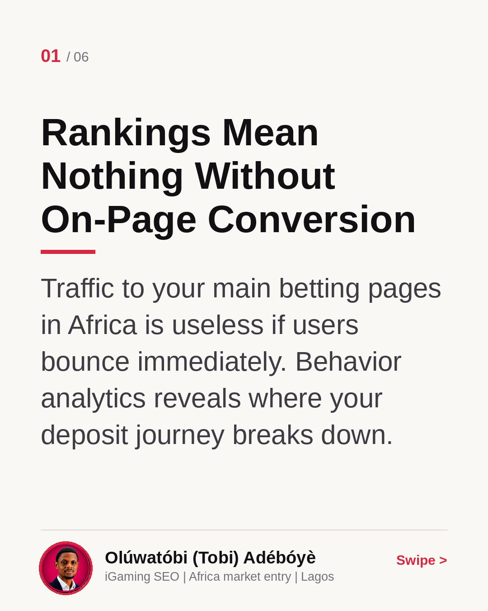
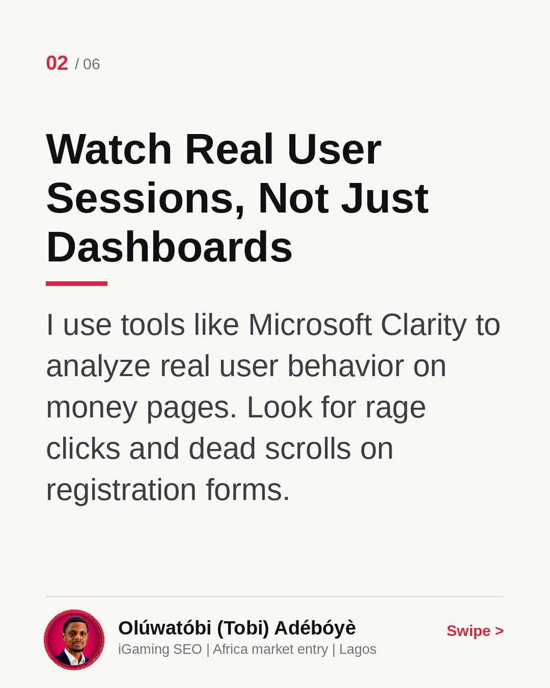
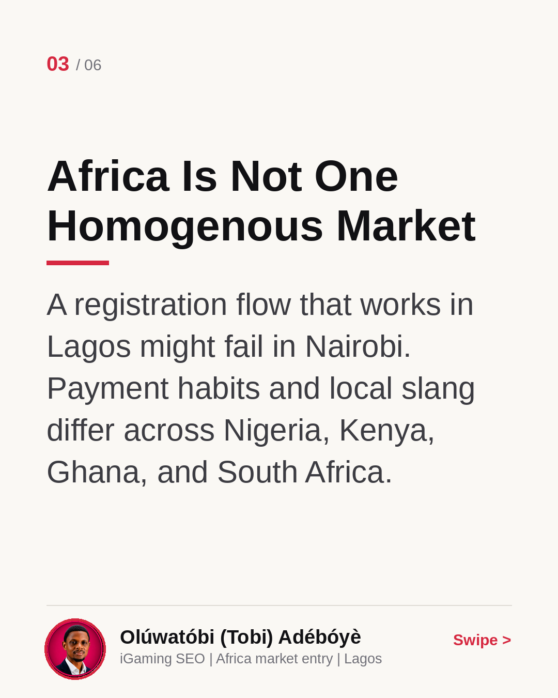
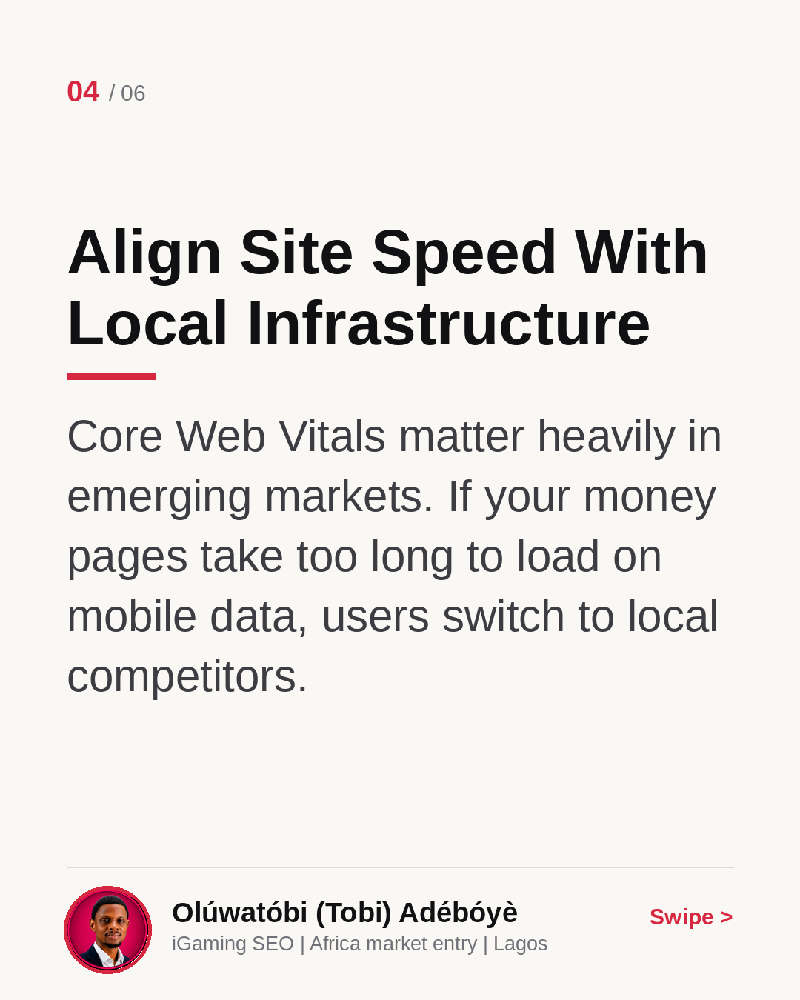
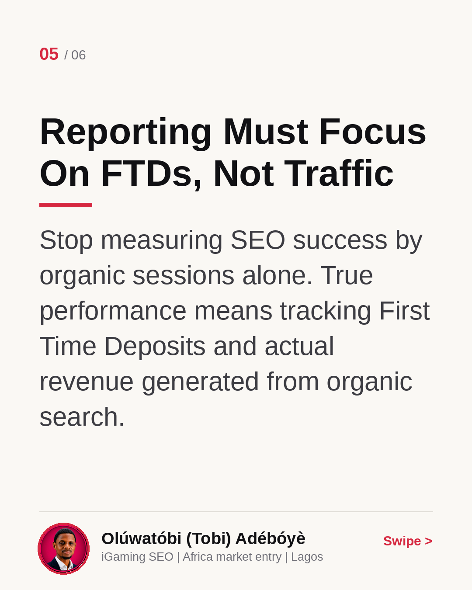
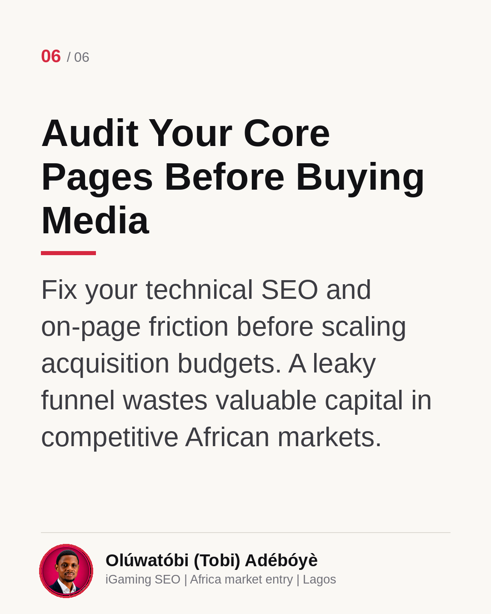

Fix Money Page Friction Before Scaling African Traffic
Many European operators scale traffic to Africa without checking on-page friction. In this carousel, I break down how behavior analytics, session recordings, and localized user flows help turn organic visitors into actual depositors. Swipe through to see how we track real metrics like FTDs instead of just vanity traffic. What is your biggest conversion challenge in Africa right now?
Rankings Mean Nothing Without On-Page Conversion
Traffic to your main betting pages in Africa is useless if users bounce immediately. Behavior analytics reveals where your deposit journey breaks down.

Watch Real User Sessions, Not Just Dashboards
I use tools like Microsoft Clarity to analyze real user behavior on money pages. Look for rage clicks and dead scrolls on registration forms.

Africa Is Not One Homogenous Market
A registration flow that works in Lagos might fail in Nairobi. Payment habits and local slang differ across Nigeria, Kenya, Ghana, and South Africa.

Align Site Speed With Local Infrastructure
Core Web Vitals matter heavily in emerging markets. If your money pages take too long to load on mobile data, users switch to local competitors.

Reporting Must Focus On FTDs, Not Traffic
Stop measuring SEO success by organic sessions alone. True performance means tracking First Time Deposits and actual revenue generated from organic search.

Audit Your Core Pages Before Buying Media
Fix your technical SEO and on-page friction before scaling acquisition budgets. A leaky funnel wastes valuable capital in competitive African markets.
